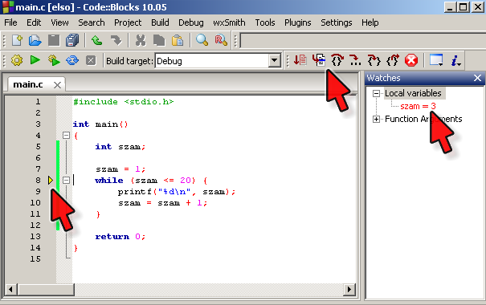

Labor, 3. hét: egyszerű programok
Pohl László, Czirkos Zoltán · 2015.02.18 · Frissítve: 2015.02.15
Vezérlési szerkezetek: elágazásokkal és ciklusokkal megoldható feladatok. Nyomkövetés és hibakeresés a Code::Blocks eszközeivel.
Ezen a héten a vezérlési szerkezeteket gyakoroljuk: elágazásokat és ciklusokat kell írni a feladatok megoldásához.
Felkészülés a laborra:
- A vezérlési szerkezetekről szóló előadás átismétlése.
- A C alapokról szóló gyakorlat átismétlése.
1Egyszerű ciklus – számok kiírása
Gondolok egy számra, legyen ez 1.
Ismétlés, amíg a szám ≤ 20
Leírom a számot.
Új sort kezdek.
Növelem a számot 1-gyel.
Ismétlés eddig
Az ábrán egy program pszeudokódja látható, amely kiírja a számokat 1-től 20-ig.
Írd meg ezt a programot C-ben while() ciklussal! Figyeld meg: ahogy gépeled be a
while() utáni { kapcsos zárójelet, az enter billentyű hatására a gép
egyből néhány szóközzel beljebb kezdi a sorokat. A bezáró } kapcsos után pedig újra
kintebb. Így áttekinthetőbb lesz a programod. Használd ezt ki!
Ha elkészült, futtasd le! Próbáld ki a nyomkövető használatával is! Figyeld meg, hogy a ciklusfeltétel azt mondja meg, hogy meddig ismételjük a műveleteket – amíg a feltétel igaz, addig újból és újból végrehajtja a ciklusmagban lévő utasításokat. Amikor hamissá válik, a ciklusmag utáni utasítással folytatja a végrehajtást.
Figyeld a „Watches” ablakban a ciklusváltozó értékét! Mennyi az értéke a program futásának
vége előtt közvetlenül? Írd át a while() ciklust for() ciklusra!
Végezd el így is a nyomkövetést!
Emlékeztető: a Code::Blocksban a nyomkövetést legegyszerűbben úgy tudod elindítani, ha arra a sorra állsz a kurzorral, ahol először meg szeretnéd a programot állítani, és megnyomod az F4-et (Debug/Run to cursor). Innentől a program az F7-ttel léptethető soronként (Debug/Next line). A „Debug/Debug windows/Watches” menüponttal hívhatod elő az ablakot, amelyben a változók (Local variables) értékét tudod figyelni.
Számok négyzete. Alakítsd át úgy is a programot, hogy minden szám mellé írja oda annak
négyzetét is. Ezt meg lehet oldani egyetlen printf()
utasítással is!
Szám beolvasása. Alakítsd át az előző programot úgy, hogy ne 1 és 20 között írja ki a számokat, hanem a felhasználó által megadott határok között! A program indítása után ne csak villogjon a kurzor egy üres ablakban, hanem írja is ki a program, hogy épp mit kérdez, azaz milyen bemenetre vár!
Megoldás
#include <stdio.h>
int main(void) {
int mettol, meddig, i;
/* Beolvasás */
printf("Mettol? ");
scanf("%d", &mettol);
printf("Meddig? ");
scanf("%d", &meddig);
/* Az "ettől-eddig-így" ciklusok szebbek,
* áttekinthetőbbek a for (...) változatban */
for (i = mettol; i <= meddig; i = i+1)
printf("%d\n", i); /* Szám kiírása */
return 0;
}
Fordított intervallum. Próbáld ki, mi történik akkor, ha az előbbi programnak fordítva adja meg a felhasználó az intervallum határait (pl. 1–20 helyett 20–1). Nézd meg nyomkövetővel, mi történik! Egészítsd ki úgy a programot, hogy ilyenkor is helyesen működjön!
Megoldás
A releváns programrészlet:
/* Beolvasás */
printf("Mettol? ");
scanf("%d", &hatar1);
printf("Meddig? ");
scanf("%d", &hatar2);
/* Melyik nagyobb? */
if (hatar1 < hatar2) {
mettol = hatar1;
meddig = hatar2;
} else {
meddig = hatar1;
mettol = hatar2;
}
2Számok szorzata
Legyen a szorzat 1.
Legyen n értéke 10.
Ismétlés, amíg n≥2
A szorzat legyen szorzat × n.
Csökkentem n-et eggyel.
Ismétlés eddig
Kiírom a szorzatot.
Módosítsd a programodat úgy, hogy az első 10 szám (1…10) szorzatát, vagyis a 10 faktoriálisát számolja ki! Tegyél a ciklus belsejébe egy olyan programsort is, amely kiírja a ciklusváltozó értékét, és a szorzatot tároló változó értékét is!
Mi történik akkor, ha túl nagy szám faktoriálisát próbálod kiszámítani? Beszéljétek meg a laborvezetővel a tapasztaltakat!
Megoldás
#include <stdio.h>
int main(void) {
int szorzat;
int n;
szorzat = 1;
n = 10;
while (n >= 2) {
printf("szorzat: %d, n: %d\n", szorzat, n);
szorzat = szorzat*n;
n = n-1;
}
printf("%d", szorzat);
return 0;
}
3Adott hosszúságú vonal
Írj egy programot, amely kér a felhasználótól egy
számot, és kirajzol egy akkora, + és − jelekből álló szakaszt. Pl.
ha a szám 4, akkor a képernyőn a lenti ábra jelenjen meg,
vagyis a belsejében 4 db − legyen:
Milyen hosszu legyen a vonal? 4 +----+
Írd meg a program pszeudokódját papíron, utána pedig gépen a C forráskódot!
Tipp: ehhez a programhoz nem kell if() elágazás. Ha
olyan változatot írtál, amiben van, akkor próbáld meg anélkül is. Kérd a laborvezető segítségét!
Megoldás
#include <stdio.h>
int main(void){
int hossz; /* Vonal hossza */
int i; /* Ciklusváltozó */
printf("Milyen hosszu legyen a vonal? ");
scanf("%d", &hossz); /* Hossz beolvasása */
printf("+"); /* A vonal elejére kell egy + jel */
for (i = 0; i < hossz; i = i+1) /* Ciklus, ami kiír adott - jelet */
printf("-");
printf("+"); /* A vonal végére is kell egy + jel */
return 0;
}
4Adott méretű négyzet
|....|
+----+ |....| |....| |....| |....| +----+
Az előző feladat rajzolást végző programrészéből készíts egy olyan másolatot, amely
+ és - karakterek helyett | és .
karaktereket használ, mint jobb oldalon! Végül pedig írj egy olyan változatot, amelyben
egy adott méretű négyzet jelenik meg.
Megoldás
#include <stdio.h>
int main(void){
int hossz;
int i, j;
printf("Mekkora legyen a negyzet? ");
scanf("%d", &hossz);
/* felső sor */
printf("+");
for (i = 0; i < hossz; i = i+1)
printf("-");
printf("+\n");
/* közepe, n-szer */
for (j = 0; j < hossz; j = j+1) {
printf("|");
for (i = 0; i < hossz; i = i+1)
printf(".");
printf("|\n");
}
/* alsó sor, mint a teteje */
printf("+");
for (i = 0; i < hossz; i = i+1)
printf("-");
printf("+\n");
return 0;
}
5Ferde hajítás II.
Emlékezz vissza az előző heti „ferde hajítás” programra.
Ebben t=0 időpillanatban, v0 sebességgel,
alfa szöggel kilövünk egy ágyúgolyót. Írd meg most úgy a programot, hogy t=0,0; 0,1; 0,2; … s
időpontokban (tized másodpercenként) írja ki az ágyúgolyó helyét; egészen addig, amíg
be nem csapódik az a földbe (y≤0)!
Megoldás
#include <stdio.h>
#include <math.h>
int main(void) {
double t, x, y;
double v0, alfa, alfa_rad;
double g = 9.81;
printf("Ferde hajitas\n");
printf("Add meg a kiloves sebesseget!\n");
scanf("%lf", &v0);
printf("Es a kiloves szoget!\n");
scanf("%lf", &alfa);
/* radianban */
alfa_rad = alfa*3.1415926535/180;
t = 0;
x = 0;
y = 0;
while (y >= 0) {
printf("t=%8.4f x=%8.4f y=%8.4f\n", t, x, y);
t = t+0.1;
x = v0*t*cos(alfa_rad);
y = v0*t*sin(alfa_rad) - g/2*t*t;
}
printf("t=%.4f s-ra mar biztosan becsapodott.\n", t);
return 0;
}
A fenti megoldás betartja a ciklusokkal kapcsolatos, előadáson bemutatott játékszabályt.
Nevezetesen azt, hogy a ciklustörzs elején szerepel az aktuális elem feldolgozása (jelen esetben
ez a kiírást jelenti), és a végén a következő elemre lépést (most ez az idő növelése, és
értelemszerűen a koordináták újraszámolása). Ennek az az előnye, hogy egy már ellenőrzött
y értékkel megyünk be a ciklusba, amelyet külön feltétel nélkül ki is lehet írni!
Mivel így a ciklus feltétele függ az y koordinátától (ez amúgy sem lehet
másképp, mert a becsapódás időpontját keressük), az első iteráció előtt már ki kell számolnunk
x-et és y-t. Odamásolhatnánk a ciklus előttre is a ferde hajítás
képleteit, de t=0 miatt azok x=0-ra és y=0-ra
egyszerűsödnek.
6A Leibniz-féle sor
Leibniz a lenti összegképletet vezette le a π becslésére. Minél több tag szerepel az összegben, annál pontosabb az eredmény. Feladat: írj egy programot úgy, hogy ennek alapján számolja ki a π közelítő értékét!
π 1 1 1 ─ = 1 - ─ + ─ - ─ + … 4 3 5 7
A feladat több buktatót is tartalmaz. Ha nem helyes a program által kiírt eredmény, használj nyomkövetést, figyeld a változók értékét!
Tipp: figyeld meg, hogy az összeadás és a kivonás váltakoznak. Érdemes kettesével, páronként haladni az összegzésben, mert akkor a páros/páratlan vizsgálat kimaradhat a programból.
Fontos: ehhez át kell térned a programban valós típusú változók használatára,
hiszen az eredmény biztosan nem egész szám. Tudni kell, hogy ha
a C nyelvben elosztasz két egész számot, akkor az eredmény is egész (lefelé
kerekítve). Vagyis 1/3 értéke C-ben 0.
Viszont 1.0/3 értéke 0.333333 lesz.
Erről később részletesen lesz szó előadáson is.
Megoldás
#include <stdio.h>
int main(void) {
double pi; /* Változó a az eredmény tárolásához */
int i; /* Ciklusváltozó */
/* Ciklus ami páronként halad, azaz egy */
/* lépésben hozzáad és ki is von egy számot */
pi = 0;
i = 1;
while (i<100000) {
pi = pi + 1.0/i; /* Hozzáadjuk a píhez az aktuális szám reciprokát */
i = i+2; /* Kettővel megnöveljük az aktuális számot */
pi = pi - 1.0/i; /* Levonjuk a szám reciprokát */
i = i+2; /* Kettővel megnöveljük a számot */
}
pi = pi*4; /* A ciklus a pi/4-et közelítette, ezért 4-el szorozni kell */
printf("%f", pi); /* Eredmény kiírása */
return 0;
}
7További feladatok
Ha elkészültél, folytasd a feladatgyűjtemény ehhez a témakörhöz kapcsolódó ciklusos feladataival!